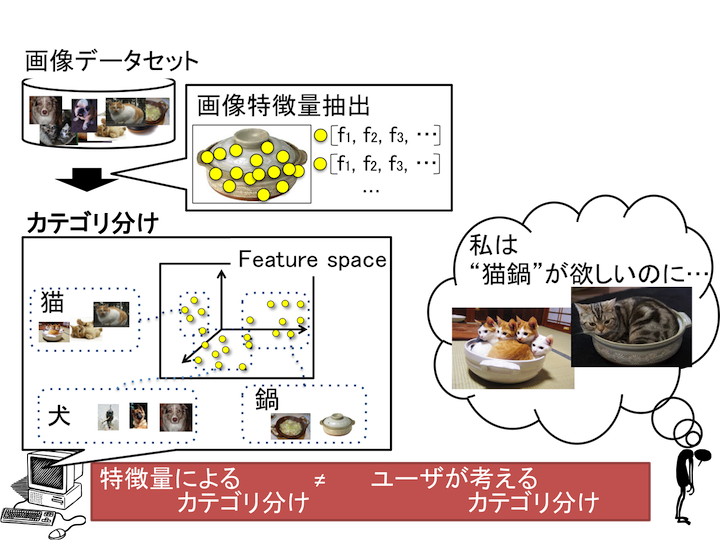
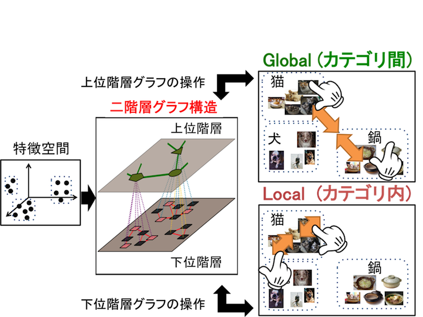
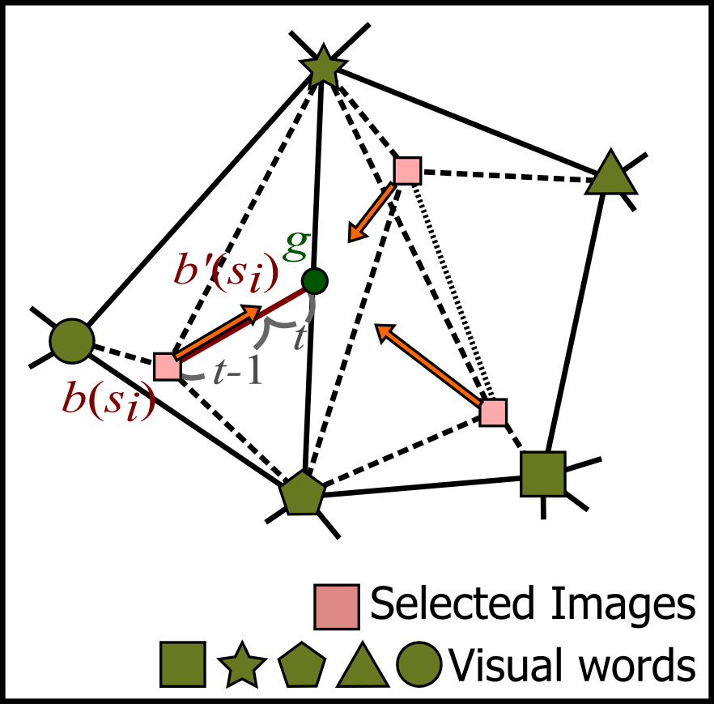
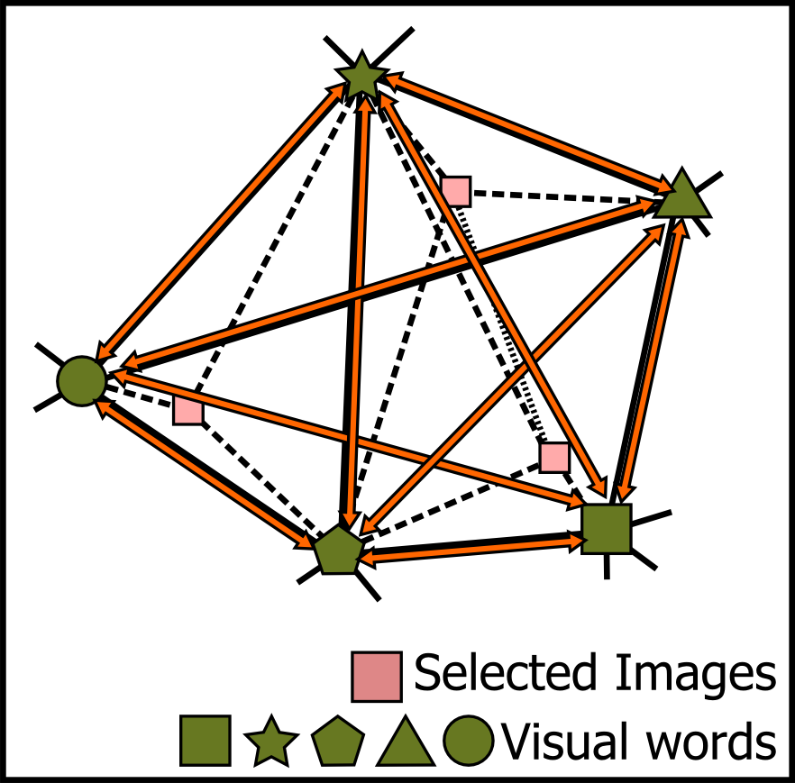
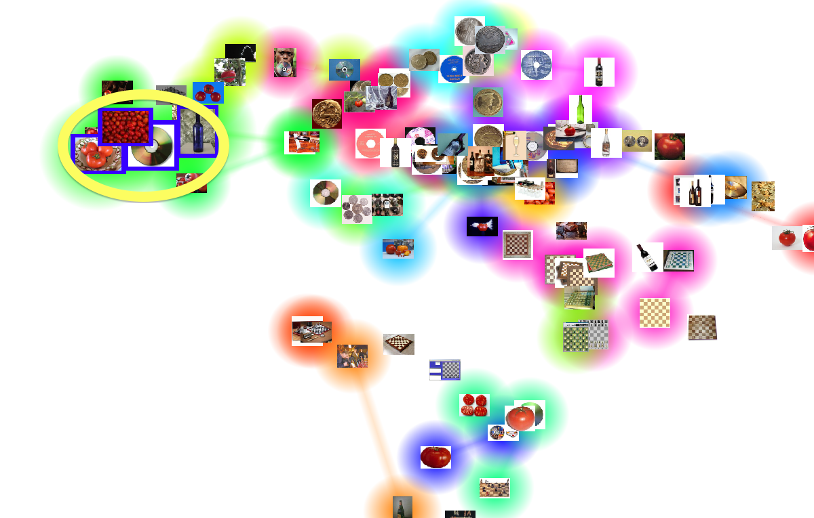
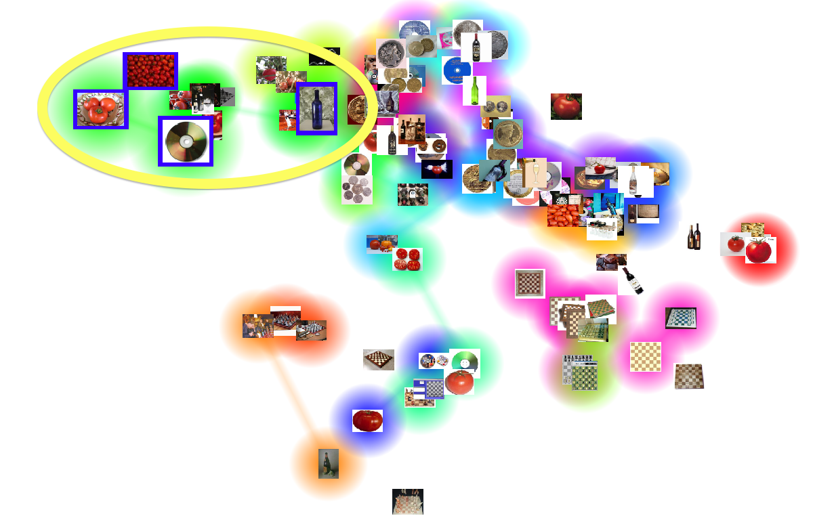

はじめに
近年インターネットの普及に伴い、ユーザが目的や嗜好に応じて自分の好みの画像を探索する機会が増えました．
アプリケーションが大量の画像データセットを扱う際には、画像を特徴ベクトルで定量的に表現することで、画像をカテゴリ分けをすることが可能です．
一方、ユーザが好みの画像を探す際にも自分自身の頭のなかでカテゴリを持つと考えられます．
しかし、ユーザが考えているカテゴリ間の距離は、アプリケーションが提供するカテゴリ間の距離とは必ずしも一致せず（図1）、
この不一致はユーザにとって欲しい画像を探索しづらい要因となりえます．
そこで本研究では図2のように、アプリケーションで定義されたカテゴリの内部(Local)に加えて、
カテゴリ間（Global）を編集する二種類の操作方法を提供する事で、
ユーザ自身がインタフェース上で自分の頭の中にある画像カテゴリを作ることを支援します．
|  |
 |
|
図1: 特徴量とユーザ間のカテゴリの不一致 |
図2: 本手法で提供する特徴空間の操作方法 |
手法
本手法では，特徴空間から二階層グラフを構築し、各階層のグラフ操作とGlobalとLocal二つのカテゴリ操作を対応づける事で、
二種類の特徴空間の操作を実現しました（図3）．
初めに、画像データセットからBag-of-Featuresモデルを用いて、
各画像の特徴量と代表特徴量（visual words）を抽出します．
次に、代表特徴量を上位階層、各画像を下位階層として二階層グラフを構築します．
得られたグラフに対して、次元圧縮を行う事で、画像の類似度を表現した二次元レイアウトを生成します．
さらに、ユーザがこのレイアウトを用いて画像の選択を行い、その選択結果を用いてGlobal/Local二種類のグラフ操作を行う事で、
カテゴリの編集を実現します．
Global/Localの各カテゴリ編集操作における二階層グラフ更新方法の詳細を、以下の図に示します．
Localのカテゴリ編集操作は、ユーザが選択した画像間の距離を更新します．
具体的には、共有する代表特徴量(visual word)の重心に向かって移動し、
関係するエッジの接続関係を再構築します．
Globalのカテゴリ編集操作は、ユーザが選択した画像に接続する代表特徴量（visual word）間の距離を更新します．
その後、全てのエッジの接続関係を再構築します．
|  |
 |
|
(a) Localのグラフ操作 |
(b) Globalのグラフ操作 |
結果
ユーザが選択した画像に対してLocal/Globalの編集を行った結果を示します．
画像の背景の色は、その画像が持つ最も強い特徴量の色を表しており、
画像の第一カテゴリとして表現しています．
ユーザは同一色（同一カテゴリ）の画像間の操作（Local）と別の色（別カテゴリ）の操作（Global）の二種類を行うことができます．
結果1: カテゴリ内の画像を近づけた結果（Local）
結果2:カテゴリ内の画像を遠ざけた結果（Local）
結果3: カテゴリ間の画像を近づけた結果（Global）
|  |
 |
|
(a) 編集前 |
(b) 編集後 |
結果4: カテゴリ間の画像を遠ざけた結果（Global）
Paper & Video
Kazuyo Mizuno, Hsiang-Yun Wu, and Shigeo Takahashi, Manipulating
Bilevel Feature Space for Category-Aware Image Exploration, in
Proceedings of the 7th IEEE Pacific Visualization Symposium (PacificVis
2014), pp. 217-224, 2014.
Paper-preprint (PDF, 26.8MB)
Video (MOV, 8.7MB)